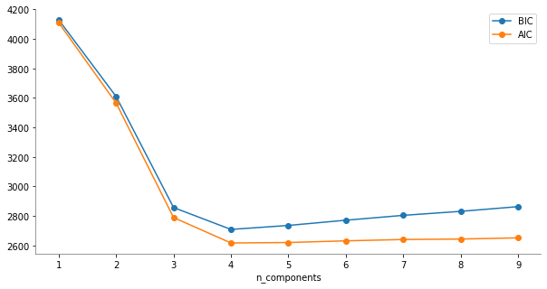

Mixtura de modelos gaussianos — 12:57
12:57 min | Última modificación: Septiembre 21, 2021 | YouTube
Este es un modelo en el cual, la probabilidad de ocurrencia de una observación multidimensional \(\mathbf{\theta}\) es obtenida como la suma ponderada de \(K\) distribuciones normales:
\[p(\mathbf{\theta}) = \sum_i^K \phi_i N( \mathbf{\mu}_i, \Sigma_i) =
\sum_i p_i (\mathbf{\theta})\]
Los parámetros del modelo (\(\theta_i\), \(\mathbf{\mu}_i\), \(\mathbf{\Sigma}_i\)) son estimados usando el algoritmo EM.
En clustering, las probabilidades de pertenencia a cada normal \(p_i(\mathbf{\theta}\) pueden usarse para asignar el patrón \(\mathbf{\theta})\) a uno de los \(K\) clusters.
Preparación
[1]:
import matplotlib.pyplot as plt
import numpy as np
import pandas as pd
import seaborn as sns
from matplotlib.patches import Ellipse
from sklearn.datasets import make_blobs
Clustering usando GMM
[2]:
#
# Creación de una muestra de 400 puntos pertenecientes a
# cuatro clusters
#
X, y_true = make_blobs(
n_samples=400,
centers=4,
cluster_std=0.60,
random_state=2,
)
data = pd.DataFrame(X, columns=["x0", "x1"])
data["y_true"] = y_true
sns.relplot(
x="x0",
y="x1",
data=data,
hue="y_true",
height=6,
palette="tab10",
)
plt.show()

[3]:
from sklearn.mixture import GaussianMixture
n_components = 4
gaussianMixture = GaussianMixture(
# -----------------------------------------------------
# The number of mixture components.
n_components=n_components,
# -----------------------------------------------------
# String describing the type of covariance parameters
# to use. Must be one of:
# ‘full’
# each component has its own general covariance
# matrix
# ‘tied’
# all components share the same general covariance
# matrix
# ‘diag’
# each component has its own diagonal covariance matrix
# ‘spherical’
# each component has its own single variance
covariance_type="full",
# -----------------------------------------------------
# The number of EM iterations to perform.
max_iter=100,
# -----------------------------------------------------
# The method used to initialize the weights
# 'kmeans'
# 'random'
init_params="kmeans",
)
gaussianMixture.fit(X)
data["y_pred"] = gaussianMixture.predict(X)
sns.relplot(
x="x0",
y="x1",
data=data,
hue="y_pred",
height=6,
palette="tab10",
)
plt.show()

[4]:
proba = gaussianMixture.predict_proba(X)
display(proba[:8].round(3))
array([[0., 0., 1., 0.],
[1., 0., 0., 0.],
[0., 0., 1., 0.],
[1., 0., 0., 0.],
[0., 0., 0., 1.],
[1., 0., 0., 0.],
[1., 0., 0., 0.],
[0., 0., 0., 1.]])
[5]:
#
# Pesos de cada componente
#
gaussianMixture.weights_
[5]:
array([0.25 , 0.24994163, 0.25 , 0.25005837])
[6]:
#
# Media de cada componente
#
gaussianMixture.means_
[6]:
array([[-5.92531007, 2.31015845],
[ 1.00147535, -1.29081199],
[-1.27700758, -9.43804623],
[-1.62893728, -3.56759624]])
[7]:
#
# Covarianza de cada componente
#
gaussianMixture.covariances_
[7]:
array([[[ 0.34694469, -0.00826231],
[-0.00826231, 0.32514874]],
[[ 0.34423644, -0.02837746],
[-0.02837746, 0.3946147 ]],
[[ 0.44133337, -0.02051966],
[-0.02051966, 0.37350909]],
[[ 0.34937955, -0.0183811 ],
[-0.0183811 , 0.35510656]]])
Interpretación
[8]:
colors = ["tab:blue", "tab:orange", "tab:green", "tab:red"]
sns.relplot(
x="x0",
y="x1",
data=data,
hue="y_pred",
height=6,
palette="tab10",
alpha=0.9,
)
for i_component in range(n_components):
covariances = gaussianMixture.covariances_[i_component][:2, :2]
v, w = np.linalg.eigh(covariances)
u = w[0] / np.linalg.norm(w[0])
angle = np.arctan2(u[1], u[0])
angle = 180 * angle / np.pi
v = 2.0 * np.sqrt(2.0) * np.sqrt(v)
ellipse = Ellipse(
gaussianMixture.means_[i_component, :2],
v[0],
v[1],
180 + angle,
color=colors[i_component],
)
ellipse.set_clip_box(plt.gca().bbox)
ellipse.set_alpha(0.5)
plt.gca().add_artist(ellipse)
plt.gca().set_aspect("equal", "datalim")

Número óptimo de componentes
[9]:
#
# Numero de componentes
#
n_components = np.arange(1, 10)
gaussianModels = [
GaussianMixture(n, covariance_type="full", random_state=0).fit(X)
for n in n_components
]
plt.figure(figsize=(10, 5))
plt.plot(n_components, [model.bic(X) for model in gaussianModels], "o-", label="BIC")
plt.plot(n_components, [model.aic(X) for model in gaussianModels], "o-", label="AIC")
plt.legend(loc="best")
plt.xlabel("n_components")
plt.gca().spines["left"].set_color("gray")
plt.gca().spines["bottom"].set_color("gray")
plt.gca().spines["top"].set_visible(False)
plt.gca().spines["right"].set_visible(False)
plt.show()
